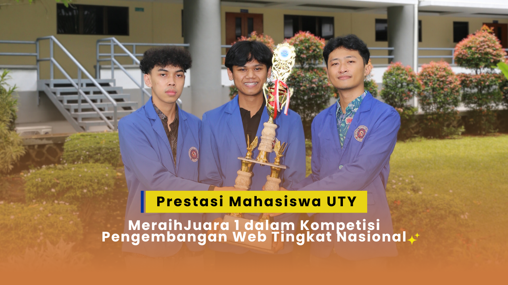

Mahasiswa STTI NIIT I-Tech Juara Coding Nasional

Oleh: Admin Eral
Mahasiswa jurusan Teknik Informatika berhasil membawa pulang piala emas dalam kompetisi pengembangan web tingkat nasional...
Inspirasi Informatika Hari Ini

Oleh: Admin Eral
Mahasiswa jurusan Teknik Informatika berhasil membawa pulang piala emas dalam kompetisi pengembangan web tingkat nasional...
Artificial Intelligence diprediksi akan semakin mendominasi berbagai sektor industri, mulai dari kesehatan hingga transportasi...